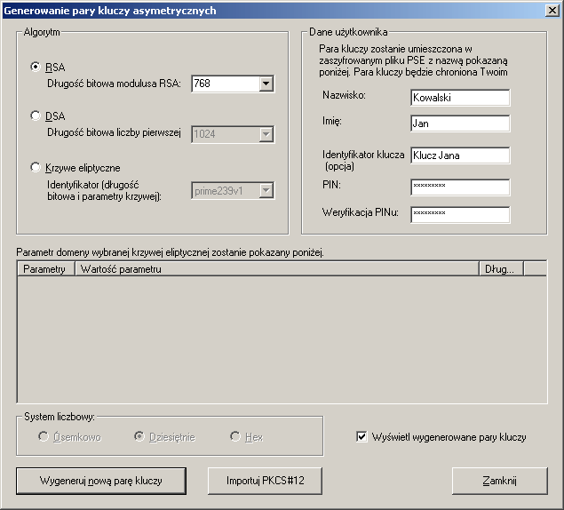
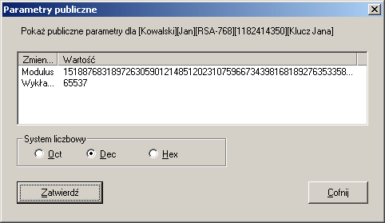
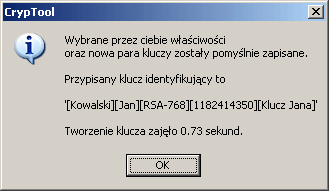
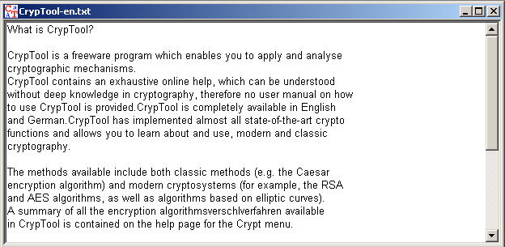
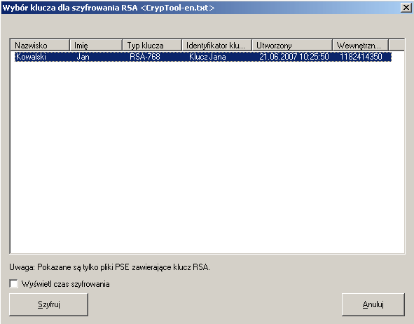
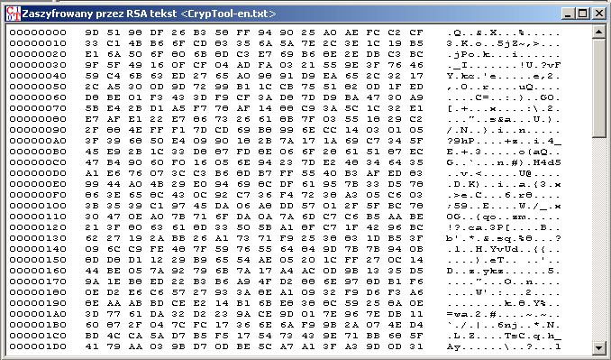
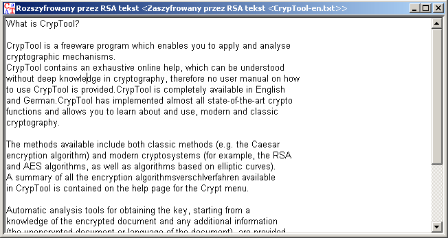

W tym rozdziale znajduje siê przyk³ad, pokazuj¹cy przyk³adowe zastosowanie algorytmu RSA do szyfrowania i deszyfrowania. Aby ³atwiej by³o wykonywaæ kolejne kroki, niezbêdne do wykonania w CrypTool, do przyk³adu do³¹czone s¹ pomocnicze zrzuty ekranu.
Szyfrowanie oraz deszyfrowanie bêdzie przeprowadzone na dokumencie tekstowym.
Przede wszystkim, nale¿y (w podobny sposób jak przy tworzeniu podpisu z u¿yciem algorytmu RSA) wygenerowaæ asymetryczn¹ parê kluczy. Wybierz opcjê menu Podpis Cyfrowy \ PKI \ Generowanie/Import klucza, i powinno pojawiæ siê nastêpuj¹ce okno.

Jako dane osobowe podaliœmy Jan Kowalski, opcjonalnym identyfikatorem klucza
jest Klucz Jana i jako numer PIN (dwukrotnie) podaliœmy CrypTool.
D³ugoœæ modulusa to 768 bitów. Wciœnij przycisk ENTER albo naciœnij na
Wygeneruj now¹ parê kluczy ,¿eby wygenerowaæ now¹ parê kluczy.
W oknie 'parametry publiczne' (dla klucza publicznego) pojawia siê modulus, sk³adaj¹cy siê z dwóch liczb pierwszych i publicznego wyk³adnika.

Naciœnij na przycisk ZatwierdŸ, i nazwa, pod któr¹ zosta³a zapisana para kluczy oraz czas potrzebny na stworzenie klucza zostan¹ wyœwietlone.

Po zamkniêciu siê okna, nale¿y równie¿ zamkn¹æ okno Generowanie pary kluczy asymetrycznych po przez klikniêcie na przycisk Zamknij.
Teraz wczytujemy fragment tekstu pomocy dla CryptTool, "Wprowadzenie do CrypTool", który jest zawarty w pliku "CrypTool-en.txt". Aby otworzyæ ten dokument w CryptTool, nale¿y wybraæ opcjê menu Plik \ Otwórz

Aby zainicjowaæ proces szyfrowania przy u¿yciu szyfrowania RSA, nale¿y wybraæ opcjê menu Szyfrowanie \ Asymetryczne .

By rozpocz¹æ szyfrowanie, musisz wybraæ odbiorcê (który zawiera jego klucz publiczny) i klikn¹æ na przycisk Szyfruj. Do szyfrowania nie jest potrzebna znajomoœæ numeru PIN. Nastêpuj¹ce okno pokazuje wyniki szyfrowania.

Deszyfrowanie asymetryczne mo¿e byæ wykonane tylko przez autoryzowan¹ osobê: Jednak¿e do deszyfrowania w kontraœcie do szyfrowania, potrzebujesz znaæ numer PIN.
Tekst jawny zostaje wyœwietlony w oknie dla tekstowego wejœcia i wyjœcia. Nastêpuj¹ce okno pokazuje rezultat.
